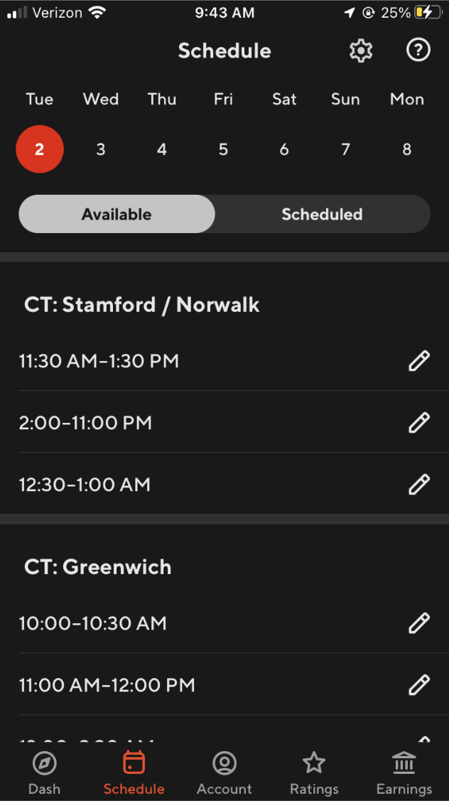
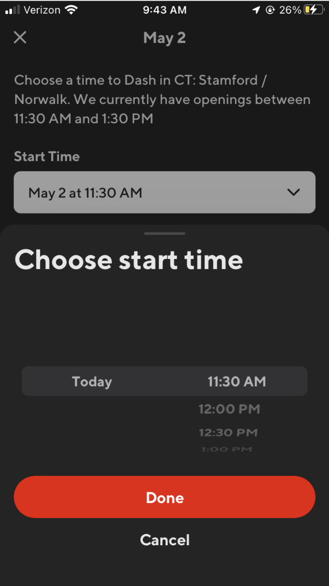
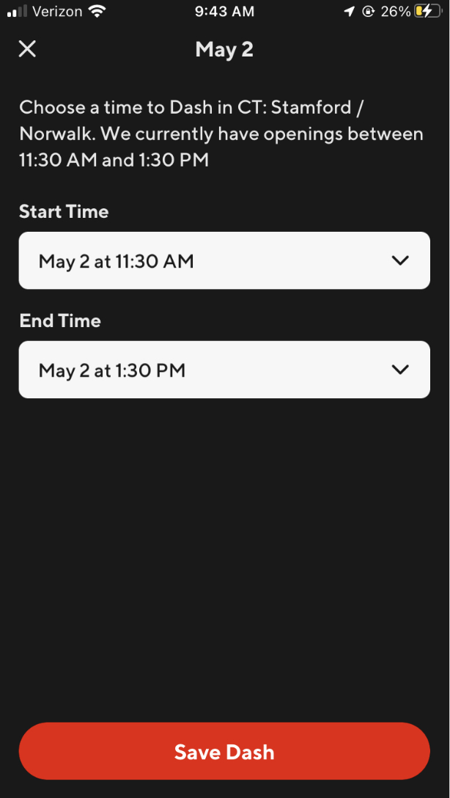

Doordash is a delivery gig application to pick up temporary work for money,
or work as an independent contractor to carry out specific tasks.
Dashers earnings, or fares, consist of base pay for each delivery
and 100% of tips. Dashers also get peak pay on top of that when
applicable, plus additional pay from active promotions.
You'll be prompted to add a bank account during the signup process
to start delivering with doordash so that you can recieve your
earnings with direct deposit.
You can also update your method of payment for direct deposit or
fast pay after you sign up.
How to accept an offer
Once signed into your Dash, our system will automiatically look for
offers for you. When you get an offer:
you will recieve a notification, and delivery or task details will
appear in your app.
You have 45 seconds to accept or decline the offer
When the offer is accepted the route will appear
Note: During peak times, you may recieve multiple offers at once.
If you're already on an order and you are offered a new one, you'll
have 45 seconds to decline or accept.
How to use the dash now feature on home page
To start recieving orders, you can start a dash by clicking the dash
now button on you dash tab.
If dash now is unavailable (area is grey), you may see a schedule
button instead, which allows you to schedule a dash at a time and
location in the future.
When the heat map is light pink, Dash Now will become available and
tapping it will start a dash making you eligible to start
recieving offers.
When the heat map is red and it says "very busy" or "busy" Dash
now to take advantage of the areas with high customer demand.
How to schedule and/or edit a dash
In the dasher app, go to the Schedule tab

Note: If your DASH NOW button says Schedule A Dash, you can do
the scheduling from there too.
In the Available tab, you'll see the upcoming days of
the week at the top. Select a day.
You can choose a starting point and available times for your dash


Note:If your preffered time is not shown, we've reached scheduled
dasher capacity for that time slot. Our schedule is constantly
updating and we suggest checking again at a later time, or
choosing another statrting point.
Delete or edit a Scheduled dash
Things may come up where you need to delete or edit the start and/
or end times for your scheduled dash. You can easily do this
within the app.
Go to the Schedule page
Tap on the day you've Scheduled tab.
Tap on the Scheduled tab.
To delete, tap on theDelete in the top right corner.
To edit the start or end time. tap on the time, select your new
time, click Done and then Save Dash.
How to use pickup and dropoff Information
The pickup screen (going to the merchant) information and the
drop-off screen (going to the customer) information are provided to
help you complete your dash.
Picking up from merchant
Finding mercahnts can be difficult sometimes. You can now:
contact the store and customer
see an image of the store location, such as parking locations (if
available)
see more details about the order
see all information in one place
Dropping off to customer
Dashers sometimes have a hard time contacting and locating
customers.
contact the customer directly to get help finding the location
see additional instructions upon arrival tot he customer (as
provided by customer).
See the breakdown of the items by person for group orders.
Communicationg with customers
Top dasher's reccomend keeping customers updated throughout the
delivery process, particularly when there are unexpected delays,
like traffic jam or a backed-up kitchen at the restaurant.
In the videos below listen to a top dasher share their strategies
for providing customers with updates.
Advice from Randy - Communicating with customers
Advice from Tamara - Communicating with customers
Add or add or switch between vehicles
Dash type are different types of transportation methods a dasher can
select to dash. DoorDash tries to fit the most suitable order types
depending on your dash type. In most markets, you'll get the most
orders if you dash with a car. In other markets that are more
difficult to get around in a car, you might find certain areas are
more favorable with a bike instead.
What dash types are available?
Car (motorized)
Motorcycle (motorized)
Scooter (motorized)
Bicycle
Ebike
You can add more then one dash type to your account. Remember to
choose the right Dash type when you start your shift. Why do I need to choose the right Dash type
Selecting the right dash type ensures that you are getting the right
orders for your vehicle type which factors things like distance,
weight, and size of the orders you get.